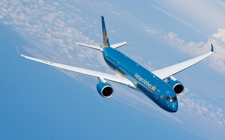

Vietnam Airlines lỗ lớn và bên bờ vực phá sản, đang nợ những ngân hàng nào?

Tính tổng cả vay nợ ngắn hạn và dài hạn thì Vietcombank đang là ngân hàng cho HVN vay nhiều nhất với tổng cộng 7.500 tỷ đồng, tiếp theo là BIDV với tổng cộng 2.600 tỷ đồng.
Bóng đá mùa Euro và những quy tắc sống còn quý giá rút ra trong đầu tư chứng khoán?
Bóng đá mùa Euro và những quy tắc sống còn quý giá rút ra trong đầu tư chứng khoán?